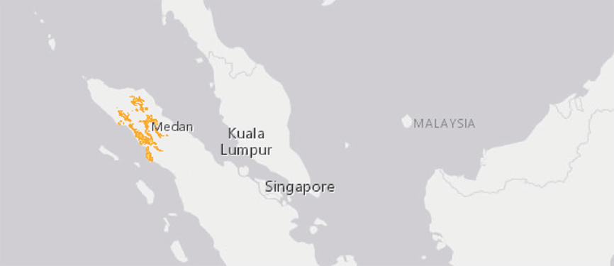
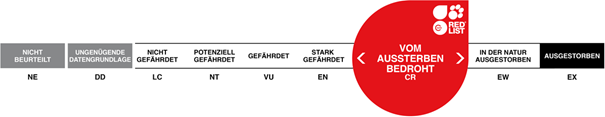
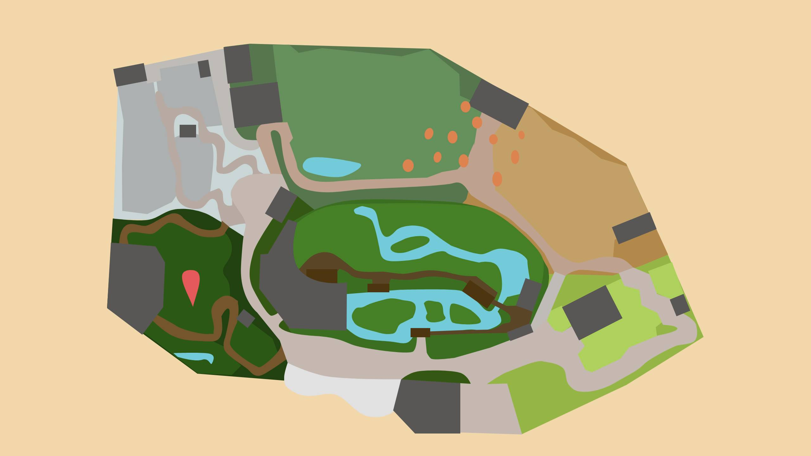

SUMATRA-ORANG-UTAN
PONGO ABELII
Der Orang-Utan (indonesisch für «Waldmensch») ist der einzige Baumbewohner unter den Menschenaffen und das grösste Säugetier, das auf Bäumen lebt. Er hält sich am liebsten in den mittleren und unteren Baumstockwerken auf und kommt vorwärts, indem er von Ast zu Ast hangelt. Diese Fortbewegungsart erfordert bei seinem hohen Körpergewicht einen grossen Kraftaufwand, darum legt der Orang-Utan am Tag nur kurze Strecken zurück. Das Haarkleid der Männchen kann 150 cm lang werden, es ist – nebst den Backenwulsten und dem Kehlsack – ein gutes Unterscheidungsmerkmal zum Weibchen. Der Orang-Utan lebt ungesellig und leise, darum sieht man ihn im Freiland kaum.
Für die Lösung einer kniffligen Aufgabe können Orang-Utans lange knobeln. Sie sind sehr konzentrierte und motivierte Feinmechaniker.
Steckbrief
| Verwandtschaft | Altweltaffen, Menschenaffen, Orang-Utans |
|---|---|
| Lebensraum | Regenwald bis 2000 Meter über Meer, Sumpfwald |
| Lebenserwartung | 50 Jahre |
| Futter | Früchte, Blätter, Triebe, Baumrinde, Honig, Eier, Insekten, kleine Wirbeltiere |
| Lebensweise | Vorwiegend baumbewohnend, selten am Boden |
Verbreitung
Bedrohunsstatus
Karte
